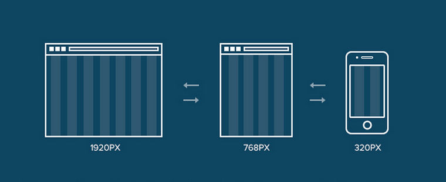
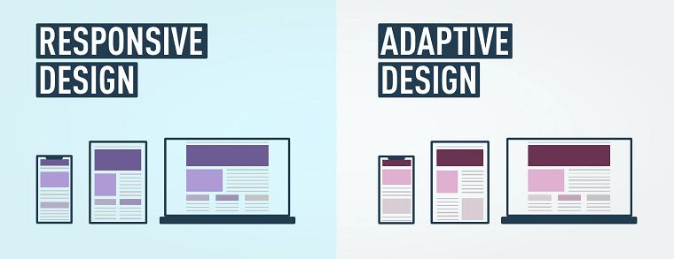

Основні техніки реалізації
Підлаштовуючи сайт під мобільні пристрої, застосовують певні інструменти. Розглянемо основні елементи та способи їх реалізації, щоб верстка вийшла дійсно адаптивна.
Адаптивна верстка – це верстка, при якій сайт однаково добре відображається на всіх можливих пристроях: комп’ютерах, планшетах, телефонах. Таких ресурсів з кожним роком стає все більше, адже мобільний трафік зростає, сучасні технології не стоять на місці. Вже не доцільно робити сайт, який буде зручно переглядати виключно на комп’ютері. Та й зробити адаптивний дизайн дуже просто.
Підлаштовуючи сайт під мобільні пристрої, застосовують певні інструменти. Розглянемо основні елементи та способи їх реалізації, щоб верстка вийшла дійсно адаптивна.
Верстати для кожного виду пристрою окремо немає сенсу, адже це займе дуже багато часу. Та й все так швидко змінюється, що ніхто не знає, що буде в тренді завтра.
Один із способів частково вирішити проблему – робити гнучкі зображення. Весь дизайн створюють з декількох шарів з використанням в деяких місцях розумної розмітки. Змінити розмір зображення можна різними способами, один з яких використання max-width і таблиці стилів. Можна також застосовувати адаптивні зображення, для чого буде потрібно завантажити спеціальний файл.
Адаптивна верстка сайту дозволяє зробити текст підходящим для читання, незалежно від того, за допомогою якого девайсу його будуть переглядати. Це можна зробити, якщо збільшити розмір шрифту або висоту рядка. Вони налаштовуються в рамках ширини макета згідно ієрархії вмісту, яка задається за допомогою CSS.
І хоча з зображеннями справа йде трохи складніше, ніж з текстом, вони можуть маштабуватися, обрізатися або зовсім зникати виходячи з того, який тип контенту вимагається під пристрій.
Основоположною ланкою як зробити сайт адаптивним є макети на основі сітки. При цьому адаптивність верстки забезпечується застосуванням саме гнучкої сітки. Разом з нею між елементами постійно буде інтервал, а через свої пропорції вони зможуть підлаштовуватися під певну ширину екрану.
Такі запити являють собою код, який відповідає за гнучкість макета. Вони визначають той код, який буде застосовуватися в залежності від розмірів і орієнтації девайса. Такі коди допускають наявність декількох макетів дизайну з використанням однієї і тієї ж HTML-кодованної веб-сторінки.
Користувацьке тестування просто необхідно, щоб отримати дані про те, як відвідувачі взаємодіють з ресурсом. Також створення адаптивної версії сайту передбачає можливість упевнитися, що ваш дизайн і сама верстка сумісні з відповідними браузерами.
При цьому найкраще перевірити ресурс не тільки на мобільних, а й інших пристроях. Чим більше гаджетів ви використовуєте, тим краще.
Попередньо знайдіть інші адаптивні сайти, подивіться, як розробники обіграють їх концепції. Це допоможе виробити свій власний дизайн.
Звичайний сайт з так званою «гумовою» версткою відображається на екрані телефону в такому вигляді, в якому він є насправді, змінюючись при цьому в залежності від розміру дисплея. І якщо в тексті є якісь дрібні деталі, наприклад, форма для реєстрації, то заповнити її можна тільки збільшивши пальцями.
Мобільна версія є доповненням до основного проекту, в якому весь контент урізається для економії трафіку. Адаптивний же сайт дає можливість перебудувати ресурс безпосередньо під певний гаджет. Таким чином, навігація і сам зміст підлаштовуються під конкретну модель пристрою.
Якщо ви хочете, щоб ваш ресурс утримував першість у пошукових системах, до його розробки слід підійти серйозно. На даний момент далеко не всі хочуть переходити зі звичайної мобільної версії. Але якщо подивитися з боку СЕО просування, можна сказати, що адаптивні сайти мають ряд важливих переваг, а саме:
Виходячи з вищевикладеного, розібравшись, що таке адаптивна верстка, стає зрозуміло, з якої причини ресурс може добре ранжуватися в пошуку. Адже коли ресурс погано працює на телефоні або планшеті, зазвичай фіксується високий показник відмов.
Мінус мобільних версій в тому, що їх контент сильно урізаний в порівнянні з основним ресурсом. Тому їх позиції в пошуковій системі також не можна назвати високими. Велика кількість відмов сприймаються пошуковими системами як показник того, що даний сайт не може надати користувачам потрібну інформацію. А це призводить до падіння його позицій.
Як показує статистика, переважна більшість (понад 60%) запитів в Google проводиться саме з мобільних пристроїв. Тому останній навіть пропонує спеціальний тест, який надає можливість визначити чи ваша верстка сайту адаптивна. Для цього ви просто вводите URL сторінки, і на екран виводиться розрахована оцінка.
Так, Google вимагає цілий перелік оптимізованих елементів для більш результативної взаємодії з власниками телефонів, використовуючи адаптивний веб-дизайн:
Всі вищезгаданих принципів дуже важливо дотримуватися при розробці власного дизайну. Щоб не втратити жодного нюансу і все зробити правильно, рекомендуємо звернутися за допомогою до професіоналів!
Фахівці нашої компанії допоможуть розробити верстку для лендінгу, корпоративного, промо сайту або каталогу. Ми разом визначимо найбільш підходяще для вас меню, розробимо оригінальний дизайн, що максимально підходить саме для вашого проекту.
Ми гарантуємо використання сучасних підходів, які послужать конкурентною перевагою для будь-якої сфери бізнесу. Займайте лідируючі позиції серед своїх конкурентів. Ціна наших послуг порадує своєю доступністю, а добре спроектований дизайн адаптивного сайта покаже ефективний результат уже з перших днів його використання.